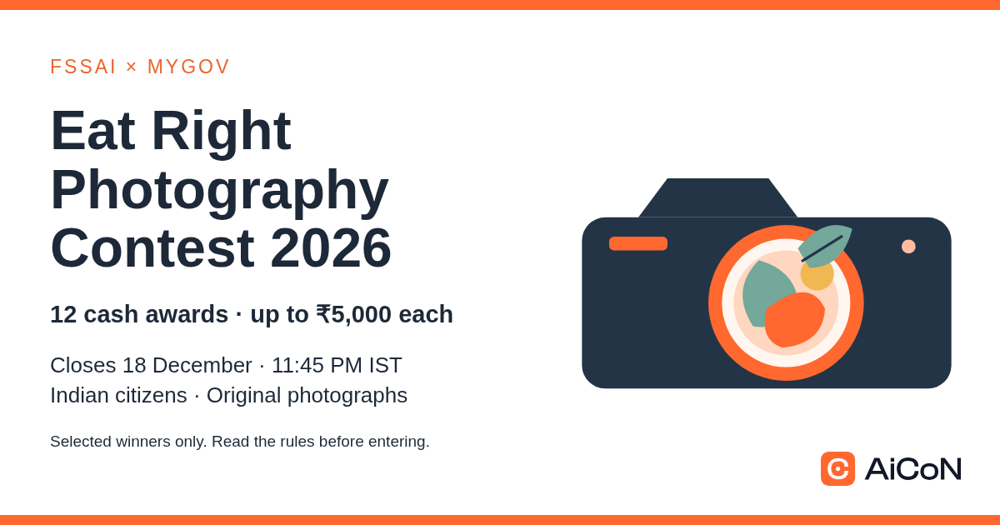
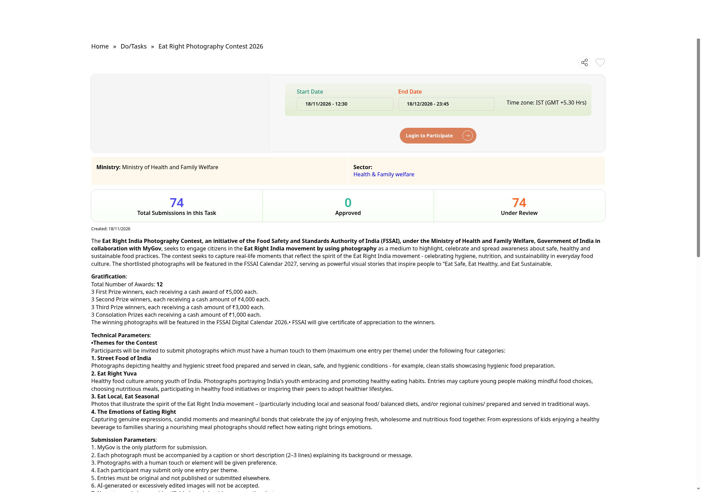

Eat Right Photography Contest 2026: FSSAI cash awards, apply by 18 December
Indian citizens who take original photographs of safe, healthy and sustainable food practices can enter the Eat Right Photography Contest 2026 on MyGov. The Food Safety and Standards Authority of India (FSSAI), under the Ministry of Health and Family Welfare, is organising the contest with MyGov. The current page lists 12 cash awards, with a highest individual prize of Rs5,000.
Use your own original photographs. AI-generated or excessively edited images are not accepted. Read the rules before submitting: entries cannot be withdrawn, FSSAI has stated use rights, and submitting contact details includes consent to promotional content.

Who can enter, and when?
The contest-specific terms and conditions, published on 18 November 2026, say entry is open to all Indian citizens. The page shows a start of 18 November 2026 at 12:30 PM and an end of 18 December 2026 at 11:45 PM IST. Submit well before the closing time rather than depending on a last-minute upload.
The reviewed contest notice and terms do not give a separate age threshold, entry-fee statement, or minor-specific consent process. Do not read that silence as proof that every account or photograph will be accepted. Check the current participation screen and ask the organiser if a child's participation or consent requirements are unclear. This guide does not claim that entering is universally fee-free.
What are the prizes?
- Three first prizes: Rs5,000 each.
- Three second prizes: Rs4,000 each.
- Three third prizes: Rs3,000 each.
- Three consolation prizes: Rs1,000 each.
The page lists 12 awards and appreciation certificates for winners. The terms say an FSSAI jury of internal and external experts evaluates entries, only selected winners receive cash prizes, and the jury's decision is final. A submission count, account registration or upload is not proof of selection.
Its introduction refers to an FSSAI Calendar 2027, while its prize paragraph refers to a Digital Calendar 2026. We have not resolved which year is intended. Treat the calendar feature as something to confirm, not a guaranteed dated publication benefit. The mismatch does not change the closing date displayed separately on the current contest page.
Choose one of four food themes
- Street Food of India: healthy and hygienic street food, including clean preparation and serving conditions.
- Eat Right Yuva: young people making nutritious food choices or encouraging healthier eating.
- Eat Local, Eat Seasonal: local and seasonal food, balanced diets, regional cuisines or traditional preparation and serving.
- The Emotions of Eating Right: genuine expressions and shared moments around wholesome, nutritious food.
The page allows a maximum of one entry per theme. Each photograph needs a short caption or description of two or three lines explaining its background or message. The page asks for a human touch and says photographs with a human element will be preferred. Follow the displayed theme choices when the participation form opens; we have not checked whether it accepts several theme entries in a single submission or through separate submissions.
Prepare an eligible photograph
- Choose an original photograph that fits the selected theme and shows safe, healthy or sustainable food practices. Do not use an image that has already been published or submitted elsewhere.
- Do not submit AI-generated or excessively edited images. Keep the original file available so you can respond if the organiser asks about originality.
- Check the frame for watermarks, logos and identifiable brands. The notice says these should not appear in the photograph.
- Obtain consent from every identifiable person in the photograph. Do not assume that being in a public place removes the contest's consent requirement.
- Use a high-resolution image. The notice says only HD-quality, high-resolution pictures will be shortlisted, but it does not state exact pixel dimensions, file size or accepted formats in the reviewed text. Confirm those details on the upload screen before preparing a final export.
- Write the two- or three-line caption yourself and check that it accurately describes the scene. Keep a copy of the photo, caption, selected theme and final receipt.
How to reach the participation page
- Open the official MyGov contest page linked below. Check the title, year and displayed closing date.
- Use Show Details if the rules are collapsed. Read the contest-specific terms PDF as well as the description.
- Select Login to Participate. Our signed-out inspection showed this button linking to MyGov's secure login route. Use your own MyGov account and complete your profile as required by the terms.
- Read the actual participation fields, file limits and declarations after signing in. Choose the theme and upload only when your photograph and consent meet the rules.
- Review everything before final submission. Save the acknowledgement if one is issued, and check any receipt/status the site provides. The terms explicitly say proof of submission is not proof of receipt.

The public www.mygov.in page loaded in our browser. The separate secure.mygov.in route was not reachable through that browser connection during this check, although the public page exposed its login link. We did not complete the signed-in workflow, so upload behaviour and successful submission were not checked by us. If login fails for you, use the official page's own route and support rather than sending your password or OTP to an unofficial helper.
Privacy, reuse and withdrawal rules
The contest terms require your name, email address, telephone number and postal address. They say submitting those details gives consent for contest use and for receiving promotional content. They also say an entry cannot be withdrawn once submitted. Consider those conditions before sharing photographs or personal information.
FSSAI reserves the right to use submissions for non-commercial, promotional, awareness and educational purposes. Do not enter a photograph if those uses conflict with the consent you obtained or rights held by someone else. The organiser can amend or withdraw the contest, reject incomplete or false information and disqualify entries under its terms. Check the latest official version before you commit.
Official sources
- Eat Right Photography Contest 2026 on MyGov: current dates, prizes, themes, originality and submission requirements.
- Contest-specific terms and conditions PDF: Indian-citizen eligibility, contact-data consent, no withdrawal, jury selection and FSSAI use rights.
No reliable English or Malayalam step-by-step video for this exact 2026 registration was verified. This guide uses the current official page and its actual downloadable terms PDF. AiCoN independent guide, checked 18 November 2026. Not a government publication or proof of successful registration.